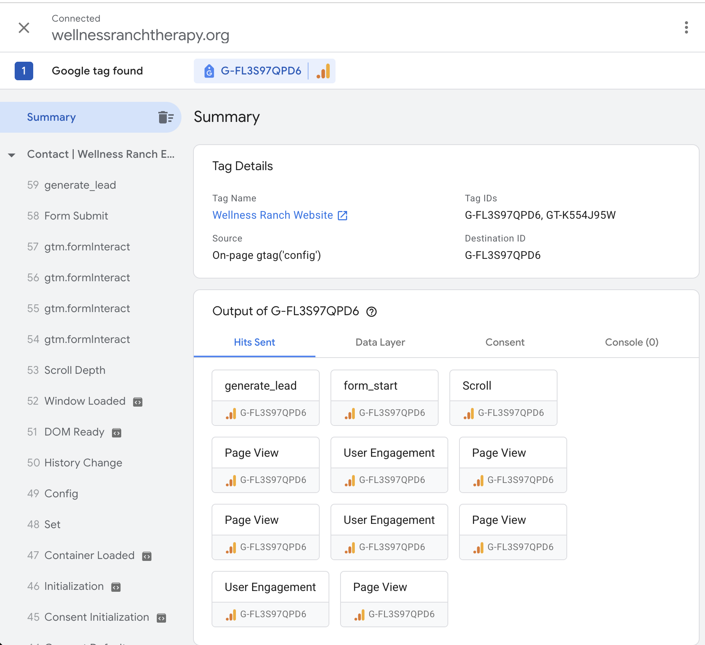
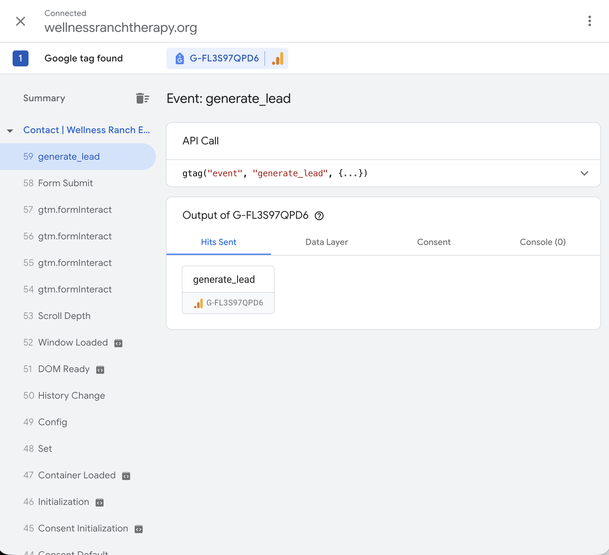

GA4-2: Tracking QA Log
Wellness Ranch Equine Assisted Therapy
1 Screenshot-Backed QA Checklist
1.1 Testing Overview
This tracking quality assurance (QA) assessment evaluates the Google Analytics 4 (GA4) implementation for Wellness Ranch Equine Assisted Therapy. The purpose is to verify that website interactions are accurately collected, processed, and reported to support marketing performance measurement and future analytics activities.
Testing was conducted on October 16, 2026, using the live Wellness Ranch Therapy website. Google Tag Assistant and GA4 DebugView were used to verify event collection, trigger behavior, and event parameters. GA4 standard reports were reviewed to assess traffic acquisition, device categories, page titles, and campaign attribution.
The validation confirmed that page views, user engagement, form interactions, and lead generation events were received by GA4. Contact form testing also confirmed that the generate_lead event was associated with the website’s contact form and contained relevant event parameters.
Several limitations were identified. The generate_lead event was initially not designated as a key event, but this configuration was updated during testing. Campaign attribution requires further validation, and the GA4 property does not currently have an active BigQuery export connection.
The following sections document the validation procedures, supporting screenshots, observed results, and remaining limitations.
1.2 GTM / Collection Layer
1.2.1 Collection Layer Validation
Google Tag Assistant was used on October 16, 2026, to verify that the Google tag was installed and sending events from the live Wellness Ranch Therapy website.
The testing confirmed that the website was connected to Google Tag Assistant and that the Google tag with measurement ID G-FL3S97QPD6 was detected.
The Tag Assistant results also showed that page views, user engagement, form interactions, and lead generation events were being transmitted to GA4.
1.2.2 Tag Assistant Connection

1.2.3 Lead Event Validation
A test contact form submission generated a generate_lead event. Tag Assistant showed one generate_lead hit sent to the GA4 measurement ID during the selected submission event.

1.2.4 QA Results
| Test | Expected Result | Observed Result | Status |
|---|---|---|---|
| Google tag installation | Correct tag detected | G-FL3S97QPD6 detected | Pass |
| Page view tracking | Page views sent to GA4 | Page view hits observed | Pass |
| Form interaction tracking | Form start event sent | form_start observed | Pass |
| Lead generation tracking | generate_lead sent after submission | One lead hit observed | Pass |
| Duplicate lead tracking | One event per submission | One hit observed in selected test | Pass (limited test) |
The collection-layer tests confirmed that the Google tag was sending the expected events. However, additional testing across multiple submissions and devices is recommended to rule out intermittent duplicate events.
1.3 GA4 DebugView and Realtime Validation
1.4 Reporting Sanity Checks
1.5 BigQuery Export Validation
2 Issues Log: Findings and Fixes Attempted
2.1 Issues Identified
2.2 Fixes Attempted and Current Status
3 Remaining Risks and Mitigation Plan
Although the QA testing confirmed that the Google tag, page views, form interactions, and generate_lead events are being received by GA4, several risks could affect data quality over time. These risks should be monitored as the Wellness Ranch website, campaigns, and tracking configuration change.
3.1 Risk 1: Duplicate Lead Events
Risk description: A single contact-form submission could generate more than one generate_lead event because of repeated clicks, page refreshes, confirmation-page reloads, or overlapping tags.
Why it matters: Duplicate lead events would inflate the number of conversions and make conversion rates, campaign comparisons, and lead-generation reports inaccurate.
Likely impact: Medium
Mitigation strategy: Test multiple form submissions across desktop and mobile devices. Use a unique submission or confirmation-state trigger, prevent repeated event firing, and compare form-submission records with GA4 event counts. Review unusual spikes in generate_lead events.
3.2 Risk 2: Embedded or Third-Party Form Tracking Limitations
Risk description: If the contact form is embedded from a third-party provider, GA4 or Google Tag Manager may not consistently detect form starts, successful submissions, or confirmation states.
Why it matters: Missing or incomplete form events could undercount meaningful conversions and make the website appear less effective than it actually is.
Likely impact: High
Mitigation strategy: Confirm whether the form is hosted on the Wellness Ranch website or an external platform. Test successful submissions, validation errors, abandoned forms, and confirmation messages. If necessary, use a reliable data-layer event, thank-you-page trigger, or server-side confirmation from the form provider.
3.3 Risk 3: Consent Settings May Suppress Events
Risk description: Consent choices, browser privacy settings, or ad blockers may prevent some users and events from being recorded.
Why it matters: GA4 reports may undercount users, sessions, engagement, and conversions. Suppression may also vary by device, browser, or audience segment, which can create biased comparisons.
Likely impact: Medium
Mitigation strategy: Test tracking with analytics consent accepted and declined. Document which events are expected to be blocked under each consent state. Interpret trends as observed activity rather than a complete count of all website activity, and monitor consent rates over time.
3.4 Risk 4: Cross-Domain Tracking Limitations
Risk description: If users move from the Wellness Ranch website to an external form, scheduling system, donation platform, or payment page, the user journey may not remain connected across domains.
Why it matters: Conversions may be attributed to direct traffic or a referral instead of the original campaign, keyword, or landing page. This could weaken attribution analysis and distort campaign performance.
Likely impact: High
Mitigation strategy: Identify all external domains used in the user journey. Configure cross-domain measurement when supported, exclude trusted domains from unwanted-referral lists, and test the complete path from advertisement or landing page through the final conversion. If cross-domain tracking is not possible, report external conversions separately and document the limitation.
3.5 Risk 5: Incomplete or Inconsistent UTM Parameters
Risk description: Campaign links may be created without UTMs or may use inconsistent capitalization, abbreviations, or naming conventions.
Why it matters: Traffic may be grouped into (not set), direct traffic, or inconsistent campaign categories. This makes it difficult to compare channels, campaigns, advertisements, and keyword-intent groups.
Likely impact: Medium
Mitigation strategy: Create a shared UTM naming standard for source, medium, campaign, content, and term. Use a campaign URL builder or tracking template, review links before launch, and periodically audit GA4 acquisition reports for missing or inconsistent values.
3.6 Risk 6: Low Traffic and Conversion Volume
Risk description: Wellness Ranch may receive a limited number of website visitors, advertisement clicks, and conversions during the measurement period.
Why it matters: Small sample sizes can cause large percentage changes from only a few users. Low volume also makes it difficult to determine whether differences between campaigns or keyword groups are meaningful.
Likely impact: Medium
Mitigation strategy: Report counts together with rates and avoid drawing strong conclusions from very small groups. Use longer observation periods, combine closely related categories when appropriate, and clearly label results as directional when sample sizes are limited.
3.7 Risk 7: BigQuery Export Is Not Currently Active
Risk description: The GA4 property does not currently have an active BigQuery export connection.
Why it matters: Without BigQuery, the team cannot independently query raw event-level data, extract parameters at scale, or build reproducible attribution analyses from the exported event data.
Likely impact: High
Mitigation strategy: Confirm whether BigQuery export is available and obtain the required project permissions. If export cannot be enabled, document GA4 as the primary source, preserve regular report exports, and maintain a consistent data dictionary for events and parameters. Avoid presenting GA4 interface totals as equivalent to a complete raw-data export.
3.8 Risk 8: Changes to Key Event Configuration
Risk description: The generate_lead event was initially not designated as a key event and could be changed, renamed, or removed from the key-event configuration in the future.
Why it matters: Changes to key-event settings can create breaks in conversion reporting and make results from different time periods difficult to compare.
Likely impact: Medium
Mitigation strategy: Maintain a change log for GA4 events and key-event settings. Review the configuration before each reporting period and verify that generate_lead remains active. Document the date of any configuration change and avoid comparing periods without noting the change.
3.9 Risk 9: Attribution and Source Classification Errors
Risk description: Referral exclusions, browser privacy controls, direct traffic, or inconsistent campaign settings may cause GA4 to assign users to the wrong source, medium, campaign, or keyword-intent group.
Why it matters: Incorrect attribution could lead the team to recommend ineffective campaigns or overlook channels that are generating qualified leads.
Likely impact: Medium
Mitigation strategy: Compare GA4 acquisition information with Google Ads campaign records and available form or CRM records. Review source, medium, campaign, and landing-page values regularly. Treat attribution as an estimate and document the attribution model and reporting window used.
3.10 Risk Monitoring Plan
The team should review the tracking configuration at regular intervals and whenever the website, forms, advertising campaigns, or consent settings change. At minimum, the following checks should be completed before each major reporting period:
- Confirm that the Google tag is still active.
- Test one contact-form submission on desktop and mobile.
- Verify that one intended
generate_leadevent is recorded per submission. - Confirm that required event parameters are populated.
- Review acquisition data for missing or inconsistent source, medium, and campaign values.
- Check whether external domains or embedded forms have changed.
- Review event and key-event configuration changes.
- Document any limitations that affect interpretation of the KPI results.
These mitigation steps will help the team distinguish actual changes in Wellness Ranch performance from changes caused by tracking limitations, attribution problems, or incomplete data collection.